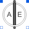

PartialAirGapDCPartial airgap model of a DC machine |

|
Information
This information is part of the Modelica Standard Library maintained by the Modelica Association.
Linear model of the airgap (without saturation effects) of a DC machine, using only equations.Induced excitation voltage is calculated from der(flux), where flux is defined by excitation inductance times excitation current. If
quasiStationary == false, the electrical transients are neglected, i.e., the induced excitation voltage is zero.Induced armature voltage is calculated from flux times angular velocity.
Parameters (2)
| quasiStationary |
Value: Type: Boolean Description: No electrical transients if true |
|---|---|
| turnsRatio |
Value: Type: Real Description: Ratio of armature turns over number of turns of the excitation winding |
Outputs (2)
| w |
Type: AngularVelocity (rad/s) Description: Angular velocity |
|---|---|
| tauElectrical |
Type: Torque (N·m) |
Connectors (6)
| flange |
Type: Flange_a |
|
|---|---|---|
| support |
Type: Flange_a Description: Support at which the reaction torque is acting |
|
| pin_ap |
Type: PositivePin |
|
| pin_ep |
Type: PositivePin |
|
| pin_an |
Type: NegativePin |
|
| pin_en |
Type: NegativePin |
Extended by (1)
|
Modelica.Electrical.Machines.BasicMachines.Components Linear airgap model of a DC machine |